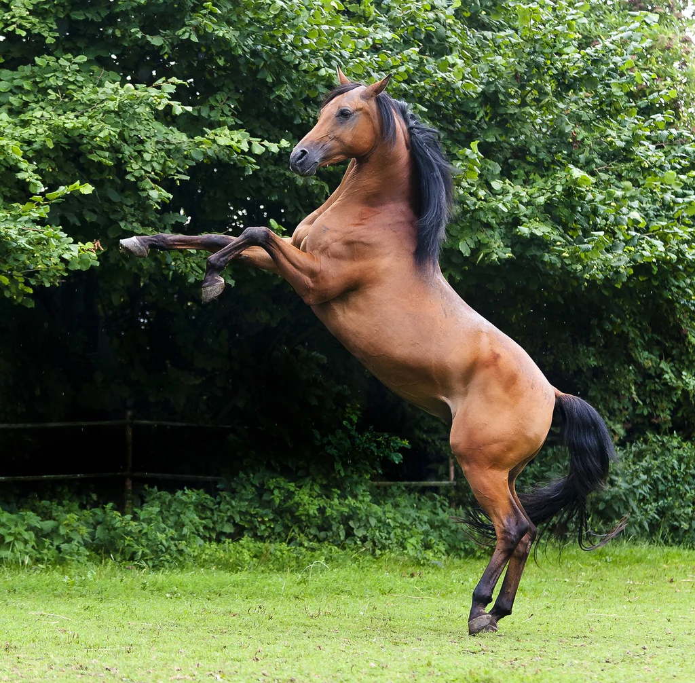

World Horse Breeds Encyclopedia
Explore the history and characteristics of amazing horse breeds from
all over the world,
from the plains of Andalusia to the deserts of the Arabian Peninsula

Explore the history and characteristics of amazing horse breeds from
all over the world,
from the plains of Andalusia to the deserts of the Arabian Peninsula
The breed is so old that its actual origin is unknown. Based on evidence, there are several theories. They may have originated as wild equines in Syria, Southern Turkey and Iraq, along the northern edge of the Fertile Crescent. Another theory suggests that they came from the Southwestern part of Arabia sometime around 2500 BC – where they have since been bred for thousands of years as war mounts, Built for speed and stamina, Arabians are quick and efficient.
Over 3000 years of documentation
Strict standards for lineages preservation


A tail raised high during movement due to the shortness of the spinal column, which is a distinctive mark of purebred Arabian horses.

It features a wide forehead and large eyes with a concave nose that increases breathing efficiency in hot climates.

A distinct, short, and strong back, often featuring only 5 lumbar vertebrae instead of 6, and 17 pairs of ribs rather than 18.
Arabian horses are distinguished by five main breeds, each with its own unique characteristics.

larger and more muscular, they are powerful and known for endurance and hardiness.

light and refined, known for graceful and agility.

a masculine type with powerful ability.

strong with a compact build,know as the classic desert warhorse.

slender and refined, they are prized for their feminine beauty.


 Scotland
Scotland
Considered the pride of Scotland, the Clydesdale is a heavy draft breed native to Lanarkshire in Scotland.
 Netherlands
Netherlands
Also called Friese paard, Friesians are noted for their flashy appearance and movement. They are ideal for showring or field.
 Austria
Austria
The Lipizzaner is perhaps most well known for their fine performing stallions from the Spanish Riding School in Vienna.
Browse our full encyclopedia to learn more details about lineages, competitions,
and ways to care for Arabian horses.